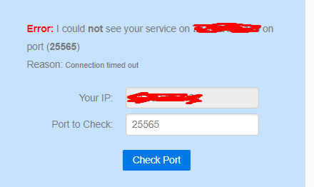

On 12/26/2019 at 10:28 PM, 5igi3lue said:glaub das lässt sich so nicht speichern. meines wissens war da immer von - bis nötig..
Aso aso - dann ist es mE nicht optimal beschrieben, weil es dort Port steht und nicht Port - Port

Hallo ich möchte gerne wissen wie ich ein Minecraft port freigebe ich will den server auf dem port 25567 starten hab aber keine ahnung was ich genau eingeben muss
Hey @boymann10
Da du ein Internet über LTE hast brauchst du zunächst eine öffentliche IP Adresse, welche du mittels des Business APN einrichten kannst.
Name: irgendwas damit du weißt wofür diese ist
Wan-Port: 25567-25567
Lan-IP Adresse: Lokale IPv4 Adresse des Minecraft Server. Am besten vergibst du für dieses Gerät eine statische IP Adresse, sonnst ändert sich diese immer wieder und die Portweiterleitung funktioniert dann nicht. Wie das zu konfigurieren ist hängt vom Betriebssystem ab.
Lan-Port: 25567-25567
Protokoll: kannst du auf TCP/UDP lassen, außer du kannst in Erfahrung bringen weiches genau benötigt wird.
Status: Ein
Bitte beachte, das sich die öffentliche IP Adresse, über welche sich Mitspieler verbinden werden immer wieder (z.B. nach einem Router-Neustart oder nach einer bestimmten Zeit) ändert. Du musst dann deinen mitspielen die aktuelle IP geben. Alternativ kannst du einen DDNS Dienst einrichten, dafür kannst du allerdings andere/zusätzliche Hardware benötigen.
LG NTM
Bearbeitet von NTMEs geht leider nicht mein Freund kann trotzdem nicht raufjoinen
Ist der Port nicht 25565?
doch bei der proxy ist der port 25565
Am 24.12.2019 um 14:07 schrieb boymann10:Hallo ich möchte gerne wissen wie ich ein Minecraft port freigebe ich will den server auf dem port 25567 starten hab aber keine ahnung was ich genau eingeben muss
hast du nun den richtigen port? du hast erst von 25567 geschrieben..
hilft dir das? Minecraft: Ports für Multiplayer-Server freigeben - so geht's
hab den port jetzt geändert auf 25565 aber es meine freunde können nicht rauf joinen an was kann es liegen?
Was sagt https://canyouseeme.org/ wenn du dort den Port eingibst?

ich hab aber alles richtig angegeben
Kannst du von einem anderen PC imlan über die LAN IP zugreifen? Bzw. Vom dem Rechner wo der Server läuft?
Hast du den Router nach dem ändern des APNs neu gestartet?
Wie im lan zugreifen? und ja ich hab nach dem wechseln der APN den router neugestartet ist nur die frage ob ich alles richtig eingestellt habe
Naja, hast du probiert von einem anderen PC in deinem LAN (WLAN) dich auf den Server zu verbinden? Dabei bitte die Interne IP verwenden. Müsste so etwas 192.168.x.x sein.
Kann ich schlecht testen weil ich der einzige bin der ein pc hier hat
1 hour ago, boymann10 said:Kann ich schlecht testen weil ich der einzige bin der ein pc hier hat
Kannst du mal nur einen Port eintragen statt der Range? Sprich 25565 statt 25565-25565
Wo soll ich das ändern?
vor 11 Stunden schrieb MarioM:Kannst du mal nur einen Port eintragen statt der Range? Sprich 25565 statt 25565-25565
glaub das lässt sich so nicht speichern. meines wissens war da immer von - bis nötig..
vor 12 Stunden schrieb boymann10:Kann ich schlecht testen weil ich der einzige bin der ein pc hier hat
wie meinst du das, spielen die anderen mit konsole? ist denn das untereinander kompatibel?
Ne spielen nur am Pc
On 12/26/2019 at 10:28 PM, 5igi3lue said:glaub das lässt sich so nicht speichern. meines wissens war da immer von - bis nötig..
Aso aso - dann ist es mE nicht optimal beschrieben, weil es dort Port steht und nicht Port - Port

Sry das ich es nicht gut beschrieben habe aber was soll ich genau jetzt machen?
On 26.12.2019 at 6:20 PM, boymann10 said:Wo soll ich das ändern?
Unter den Portweiterleitungseinstellungen - falls das geht
Hallo
Habt ihr schon was rausgefunden?
lg
21 minutes ago, TheCableGuy said:Hallo
Habt ihr schon was rausgefunden?
lg
Hast du das gleiche Problem?
Nicht wirklich
für ein paar spiele wie Magicite oder Warcraft 3 sind Portweiterleitungen nötig aber für Minecraft und ko miete ich mir nur noch Server ist komfortabler ;-)
17 minutes ago, TheCableGuy said:Nicht wirklich
für ein paar spiele wie Magicite oder Warcraft 3 sind Portweiterleitungen nötig aber für Minecraft und ko miete ich mir nur noch Server ist komfortabler ;-)
Achso achso

Am 29.12.2019 um 16:02 schrieb MarioM:Unter den Portweiterleitungseinstellungen - falls das geht
Wie meinst du?
Was soll ich genau machen?
Hallo ich möchte gerne wissen wie ich ein Minecraft port freigebe ich will den server auf dem port 25567 starten hab aber keine ahnung was ich genau eingeben muss
Am 29.12.2019 um 16:02 schrieb MarioM:Unter den Portweiterleitungseinstellungen - falls das geht
geht leider nicht
Am 29.12.2019 um 16:02 schrieb MarioM:Unter den Portweiterleitungseinstellungen - falls das geht
wo soll das stehen?
@boymann10 hast du dir den Artikel auf chip angesehen? Die Einstellungen sollten auch in der Firewall gemacht werden können.
hier nochmal der link: https://praxistipps.chip.de/minecraft-ports-fuer-multiplayer-server-freigeben-so-gehts_36529
klappt soweit ich weiß ab win8
On 31.12.2019 at 3:51 PM, boymann10 said:geht leider nicht
Achso du musst also eine Range eingeben
 Na dann probier mal das mit der Firewall wie
@5igi3lue
dir empfohlen hat
Na dann probier mal das mit der Firewall wie
@5igi3lue
dir empfohlen hat
vor 9 Stunden schrieb MarioM:Achso du musst also eine Range eingeben
Inzwischen @MarioM glaub ich ja das es von Modell zu Modell unterschiedlich ist. Bei meinem B525s-23a ist von/bis nötig.
On 2.1.2020 at 5:48 PM, 5igi3lue said:Inzwischen @MarioM glaub ich ja das es von Modell zu Modell unterschiedlich ist. Bei meinem B525s-23a ist von/bis nötig.
Das ist bestimmt so
 ... und meistens sind die Beschreibungen leider unzureichend
... und meistens sind die Beschreibungen leider unzureichend

Funkt auch leider nicht das mit der Firewall
22 hours ago, boymann10 said:Funkt auch leider nicht das mit der Firewall
Au weh, das sieht aber dann sehr eigenartig aus
 ... Schön langsam gehen mir die Optionen aus
... Schön langsam gehen mir die Optionen aus
Dieses Internet hab ich B529s-23a vl helfe ich dir da weiter
Hilft dir das weiter?
Virenschutz hast du auch deaktiviert gehabt?
Ports ohne Range eingeben hast du probiert?
Firewall hast du deaktiviert?
Was könnten wir noch probieren ...
Bearbeitet von MarioM